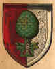

Archiv der Augsburger Pflanzenbücher
Eröffnungsbilder
Führungen
Presse
Vortragsbilder
Plakate
Zur Startseite
Rückblick zur Ausstellungseröffnung vom 11.08
Previous
Next
Fotos: Peter Neidlinger, Fotostelle Universität Augsburg
Bilder der Führungen von der Kuratorin Julia Vollweiler
Previous
Next
Pressemitteilungen
Augsburger Allgemeinen Zeitung vom 7. August erwähnt
Rückblicke unseres Vortrags im Juni:
Previous
Next
Fotos: Peter Neidlinger, Fotostelle Universität Augsburg
Anbei unsere Werbeplakate, designed von Julia Vollweiler